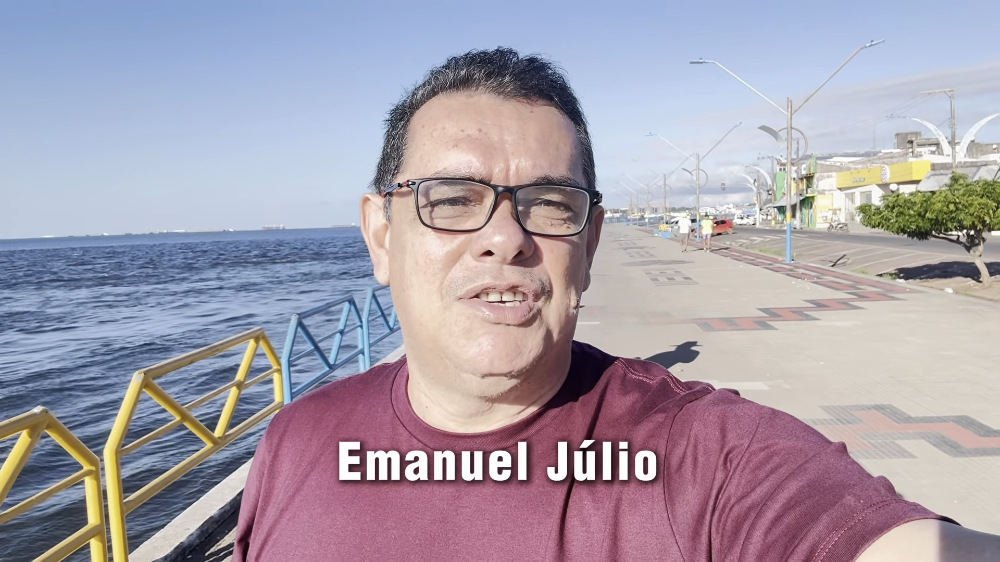

Pular para o conteúdo
Site
Revista
Destinos
Central
A Amazônia
começa aqui.
Explorar destinos
Ler a revista
Ilha do Amor, Alter do Chão
·
Turismo Aqui, 0:48
Da revista
Ver todas as matérias

Emanuel Júlio na orla de Santarém
·
Turismo Aqui, 0:14
Sobre o canal
Turismo Aqui, com Emanuel Júlio
Assistir ao canal
História do projeto
Mais sobre o canal
Lançamento do canal
Primeiro episódio de Os Caminhos de Alter do Chão